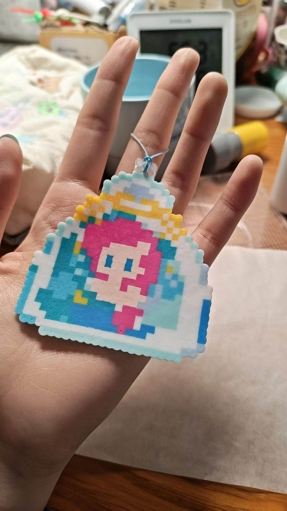
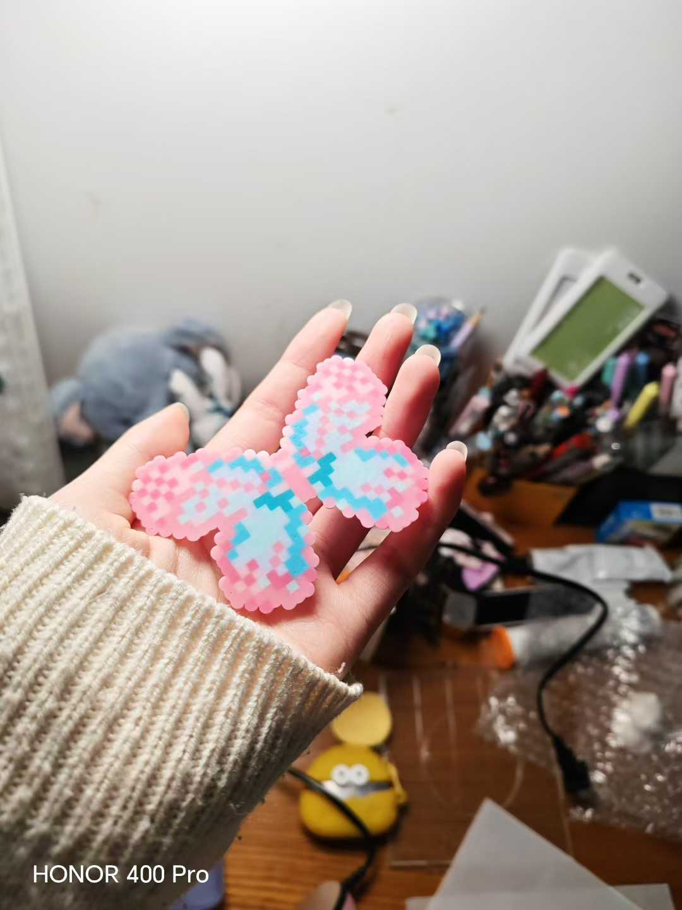
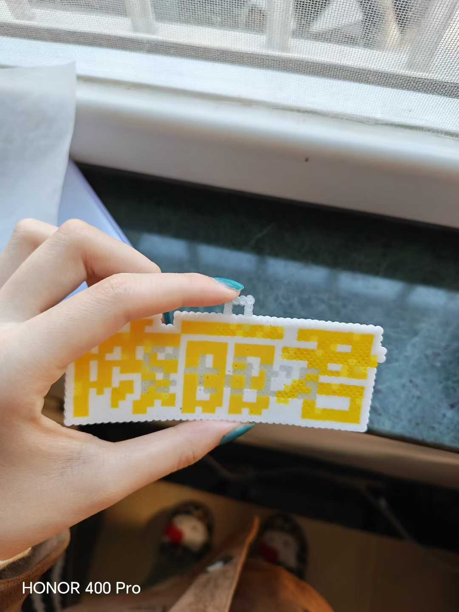
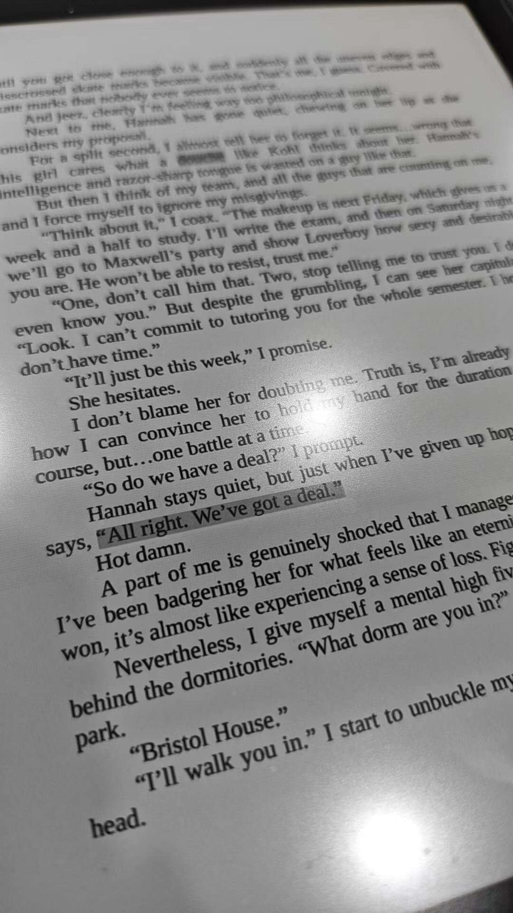
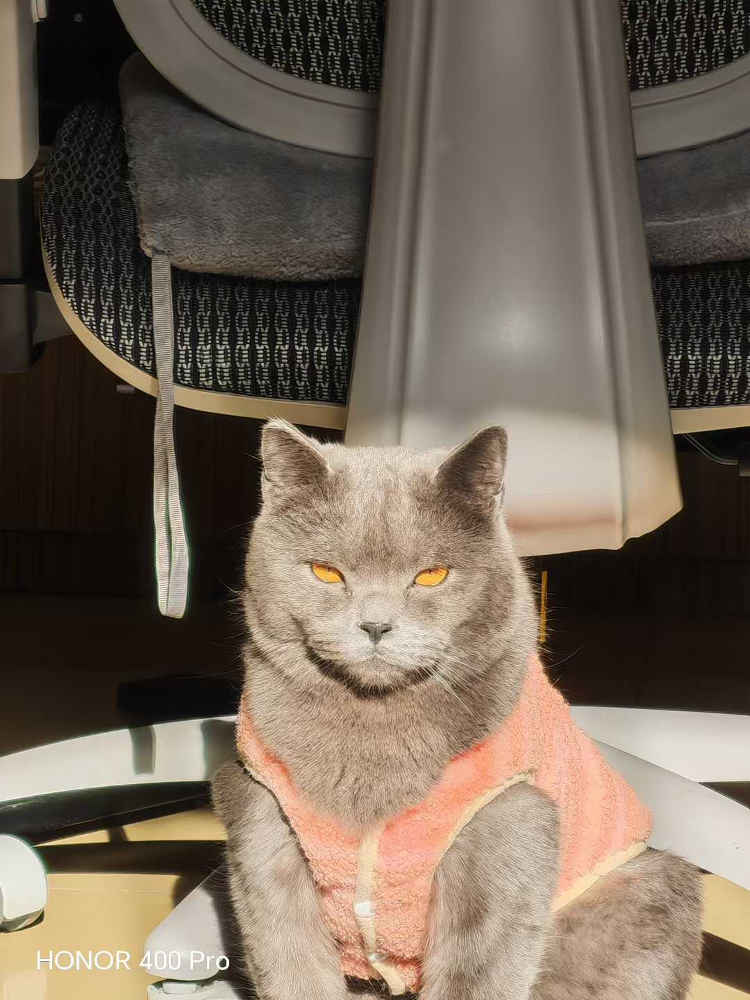
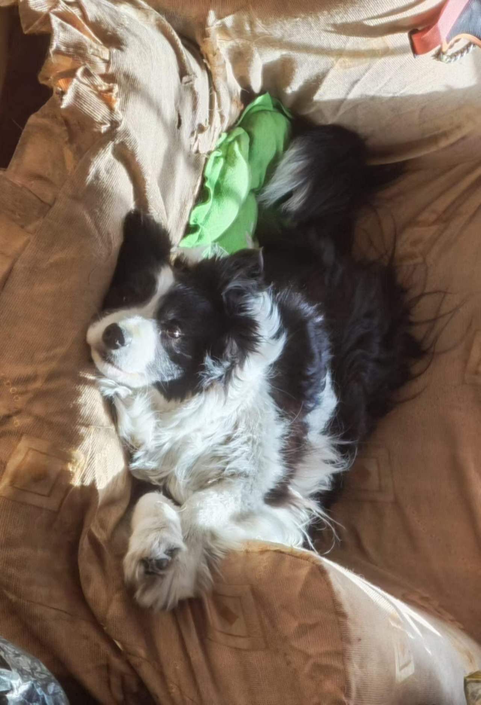
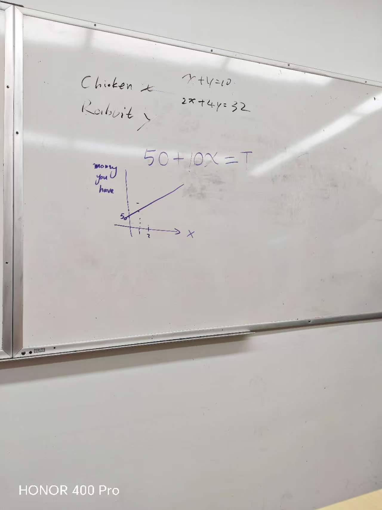
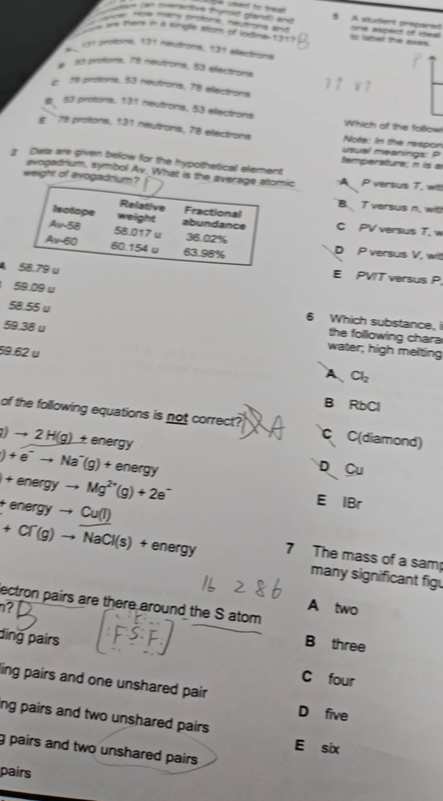
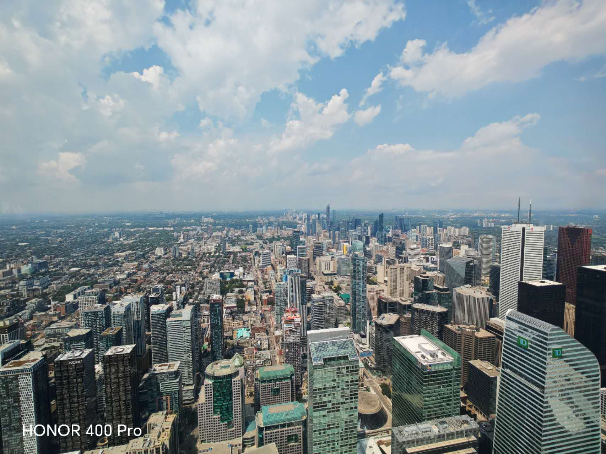
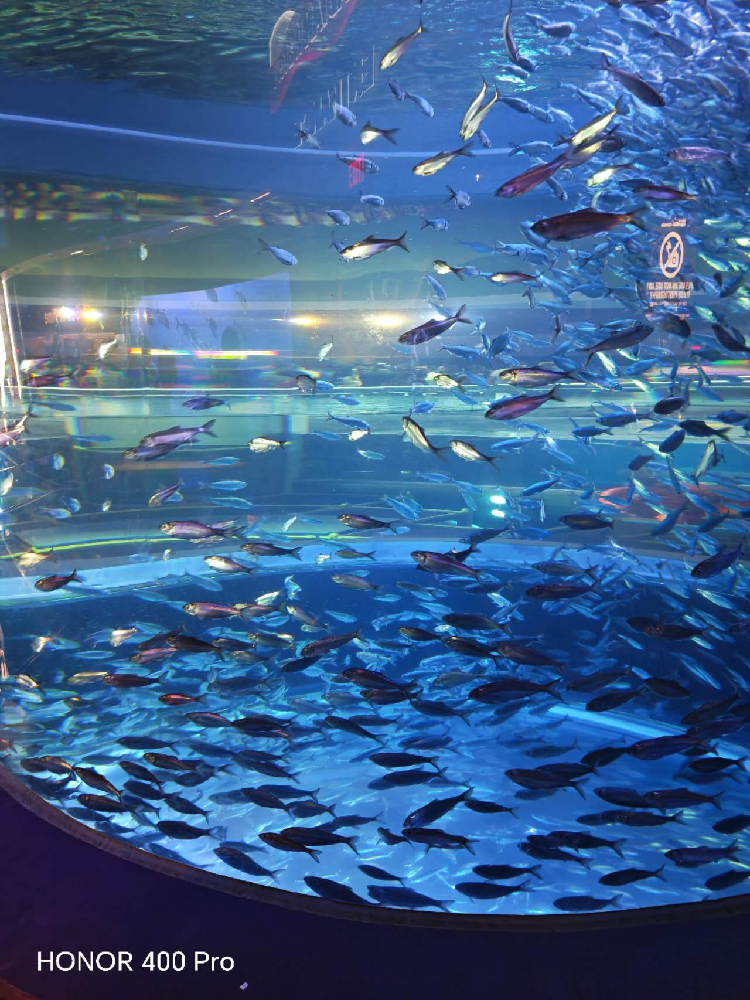

Self introduction
Basic Information
My name is Ariel, 16 years old, from ShangHai, China
♡ฅ( ̳• ·̫ • ̳ฅ)♡
My hobbies
Watching TV
I especially like'Friends', which is classic and meaningful.
Doing handcraft
I 've spent a lot of time on it……



Reading books
I like reading romantic novels such as 'twight'and 'off campus'.

Watching Yue Opera
If you consider traditional opera as boring and outdated, then you are wrong. It's more and more popular among young people.
Here's one of my favourite plays, which was performed by Chen Lijun, one of the most successful Yue Opera actresses.
Raising pets


Canada Goals
I come here to learn about diverse cultures and enjoy the low-paced lifestyle.
So, do you wanna know more about my trip? Let's begin!
🤎My trip in Toronto🤎
8.7🤎 The first day in Toronto.We arrived in twelf o'clock, then studied Maths and went to the supermarket. I brought a lot of snacks and drinks. The ice cream truck impressed me a lot, which I've only seen in cartoon.

8.8🤎 We studied Chemistry went to the CN tower and a aquarium beside it. The view from the tower is breathtakingly beautiful.



8.9🤎 We learned Physics and participated in a cultural exchange activity. We made a speed bump out of paper and tape in the morning, then we made a tower out of noodles and tape with local students in the afternoon.


8.10🤎 We went to Centennial College and made a career planning test. The test showed that I'm suitable to Business, which is within my expectation.
8.11🤎 We went to U of T. I like the architectural style there, which reminds me of Hogwarts.


8.12🤎 The Niagara Falls is awesome, though it made me totally wet. We shopped a lot that day.
8.13🤎 We studied making website and visited Casa loma.
8.14🤎 We visited Waterloo and UTM. The environment of the universities are perfect and they both have strong academic atmosphere.
8.15🤎 We visited Royal Ontario Museum. It was impressed me that there was many Chinese cultural relics.

Conclusion
During this meaningful study tour, I gained precious experience that connot be simply learned from textbooks. I stepped out of my familiar learning environment and embreced a brand-new world of culture, nature and interdisciplinary knowledge of Maths, Physicis, Computer and so on. I'll keep this memory in mind and continue to improve myself in future studies.